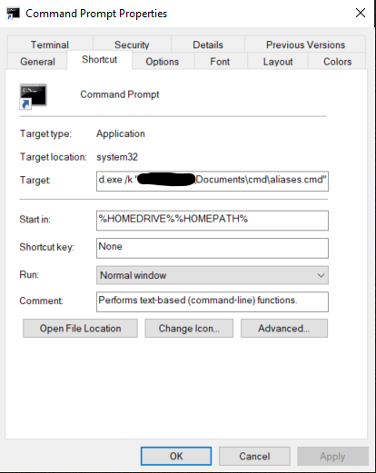

This post is the first in a two-part series on setting up and using SQLite at home (read Part 2 here). I was inspired to address this topic due to the number of posts on the Codecademy Forums regarding using SQLite locally on their own computers. Although I feel Codecademy is a great way to get started learning a new programming language, one of their weak points has always been transitioning their learners to coding offline. Hopefully these posts will serve as a definitive reference for getting beginners set up to explore and interact with SQLite databases on their own computers.
So you've taken an online course on SQL databases and you're eager to take your new skills for a test drive on your own computer...but you have no idea where to start. Fortunately (or unfortunately, depending on how you look at it!) you are not alone. When I first began learning SQL a couple of years ago, I was surprised that something so easy to use on {insert any online-learning resource here} could be so challenging to use on my own device. In fact, as a programming novice, I found setting up environments for general purpose languages (like Python or C++) to be far easier than setting up an intuitive and productive environment for SQL.
Considering SQL is the gateway language for many data-oriented programmers, my goal is for these articles to serve as a jumping-off point for newer programmers and aspiring data scientists, and hopefully save them some time down the road. I'll be covering how to install and interface with SQLite through the command line (here in Part 1: CLI), as well as interacting with SQLite through Python and Jupyter Notebooks, Visual Studio Code and finally DB Browser for SQLite in Part 2: Better alternatives for data exploration.
Installing SQLite¶
1. Install with Anaconda¶

By far the easiest way to install SQLite is through Anaconda. Chances are, if you are interested in data science, you have either heard of or currently use Anaconda. Anaconda is an open-source data science distribution that comes pre-packaged with hundreds of Python and R packages, with the option of downloading thousands more. SQLite is automatically installed with the Individual Edition of Anaconda and is ready to use as soon as Anaconda is finished installing on your computer. What makes installing SQLite this way so convenient is that everything is already set up for you — all you have to do is download and run the installer and follow the prompts. From there, you can run SQLite directly from Anaconda Prompt with no further setup.
Note: You can also use Miniconda, Anaconda's barebones sister-software, but you will have to manually install SQLite using the conda install command in the terminal after Miniconda has finished installing. If you have the disk space, it is much easier to simply set up the full installation of Anaconda.
2. Install from Direct Download¶

If you would rather download SQLite on its own, simply head to the sqlite.org download page and choose the binary installer for your operating system. For Windows, I suggest downloading the sqlite-tools bundle:

This will download a zipped folder with the .exe files you need. Unzip the folder and you are ready to begin setting up your environment.
Choosing a SQLite Environment¶
The local environment you use for running SQLite will be highly dependent on your skill level and how you intend to use your database. If you have never used a command line application before, you may not want to interface with SQLite using the command line. On the other hand, you will probably interact with your database differently if you are incorporating it into a program versus merely exploring it. If you fall into the latter category, learning the command line interface (CLI) will be beneficial, if not entirely necessary.
For the remainder of Part 1 and the entirety of Part 2 I will go over the four main ways I use SQLite at home, starting from the most complex (command line) and moving toward the simplest option (DB Browser):
- Command Line
- Python/Jupyter Notebooks
- Visual Studio Code
- DB Browser
For each, I will walk through the set-up process, pros and cons, and a quick demonstration using the sample database found here.
1. Command Line¶
The command line interface for SQLite can be very flexible and is a must for those looking to incorporate SQLite into their apps. On the other hand, it's less user-friendly and has a higher learning curve for the average GUI-oriented person than the other three options I will go over. I also feel it is the weakest option for database exploration, which may be the primary use case for data/BI analysts and data scientists.
Thus, if you have no need, desire, time, etc., to set-up and learn the command line interface for SQLite, skip this section and check out one of the other three methods discussed in Part 2: Better alternatives for data exploration.
For those of you who need to learn it, love the terminal and/or hate using a mouse, or simply want to learn a new skill during your COVID-19 quarantine, I'll do my best to cover the set-up and use of SQLite using your choice of:
- Anaconda Prompt
- Double-clicking the sqlite3.exe file
- Git Bash (downloaded with Git for Windows)
- Windows PowerShell
- Command Prompt
A) Anaconda Prompt: My favorite CLI option¶

If you've already installed Anaconda, don't even bother looking at the other Windows terminal options unless you have a strong preference for one of them.
Seriously.
If I use SQLite on the command line, 9 times out of 10 it is with Anaconda Prompt. Why? Because I already use Anaconda Prompt all the time on Windows, and it works right out of the box. As soon as Anaconda is finished installing, simply open up Anaconda Prompt and type sqlite3. That's it. It will immediately start up SQLite and you can open your database from there.
conda install sqlite3) and then it should run using the sqlite3 command without additional setup.
B) Double-clicking the .exe file: Easiest to open, most annoying to use¶
If you downloaded SQLite directly from sqlite.org, one option you have is to click on the sqlite3.exe file you downloaded. If you didn't change the location when you unzipped the file, it should be saved somewhere similar to Downloads > sqlite-tools-win32-x86-3310100 > sqlite-tools-win32-x86-3310100 > sqlite3.exe. Once you double-click on this file, a command-line interface opens up for SQLite.
Unfortunately, this method has a few limitations that I can't personally overlook. First, you cannot do anything else from the same terminal window — you are limited to SQLite and that's it. This largely defeats the purpose of using the program from the command line, in my opinion. Second, you cannot change directories prior to starting up the SQLite CLI, since the terminal window automatically appears with SQLite started.
In practice, this means that you have to use SQLite's built-in .cd command to navigate to your database. Although this works fine in many circumstances, the .cd command handles file or folder names containing spaces poorly.
For example, to navigate to a database with the path C:\Users\User1\Desktop\Sample Database\chinook.db you would have to use two .cd commands, a .open command and a .tables command. Compared the other options (see screenshot below) this is wildly inefficient.

C) Git Bash: Nice for Bash lovers, less setup than PowerShell or Command Prompt¶

If you prefer Bash over Windows-style terminals, or if you already spend a lot of time on Git Bash, this may be the CLI option for you. It works great once it is set up, and the setup is minimal compared to PowerShell or Command Prompt. Codecademy already has an article on setting SQLite up on Git Bash, as well as Mac and Linux terminals, so I won't go into a whole lot of detail. The key is making sure to use the winpty command to make sure MinGW can open the executable file. A stripped down version of the setup is as follows:
- Navigate to the directory of your .exe file in Git Bash
- Run the command
winpty ./sqlite3.exeto make sure SQLite works. If it does, useCtrl+Cor the.exitcommand to exit the program. - Still in the same directory, create an alias for SQLite using the following command
echo "alias sqlite3=\"winpty ${PWD}/sqlite3.exe\"" >> ~/.bashrc - Refresh your terminal using
source ~/.bashrc
If your alias is properly set up you should be able to run SQLite from any directory. Go back to your home directory (cd ~), then use the command sqlite3. If the program starts, you are good to go.
D) PowerShell: Cumbersome initial setup, only use if you love PowerShell¶

If you gravitate toward PowerShell for command-line tasks, you are likely a Windows power user or aspiring sysadmin. Or maybe you just really love blue. Either way, you'll want an easy way to access SQLite through PowerShell. Although creating a persistent alias in PowerShell (one that will last after you close the terminal) is doable, it will take a few extra steps.
First, you need to decide which PowerShell profile the alias is going to be for, and whether that profile has been created yet. If you have no idea what I am talking about, you probably do not have any profiles set up yet. To set up a profile for the current user in the current PowerShell host application, use the following command:
if (!(Test-Path -Path $PROFILE)) { New-Item -ItemType File -Path $PROFILE -Force }If you are curious what your profile is named, you can check using the
$PROFILEcommand. As you can see, your profile is located in a folder with the pathDocuments\WindowsPowerShellTo edit your newly-created profile, use the
notepad $PROFILEcomand, which will open up the file in Notepad. Any alias that you save in this file will work any time that specific user opens up PowerShell.Finally, to give SQLite an alias of
sqlite3, paste the following into the file that Notepad opened up:
and replaceSet-Alias -Name "sqlite3" -value "YOUR_PATH_HERE\sqlite3.exe"YOUR_PATH_HEREwith the path to your SQLite executable file.
Now, any time you type sqlite3 into PowerShell it will start right up. For more information on PowerShell profiles and aliases, check out the documentation here and here.
E) Command Prompt (cmd): Consider using something else?¶

Command Prompt (or Cmd) is the OG Windows terminal — the successor of the iconic MS-DOS command-line shell. However, despite being around for nearly 30 years, Cmd still has a surprisingly large user base and is not going anywhere anytime soon. So, if nostalgia of the days when we used to boot up operating systems from floppy disks brings a tear to your eye, then cmd is really the only way to go.
Much like PowerShell, setting a one-time alias is easy in Cmd, but ensuring it works each time you start up a terminal takes a little more work. To set up a persistent alias for SQLite using Cmd, you'll need to modify your Cmd shortcut with a batch file using the following steps:
- First, open a new file in Notepad
- In the file, write a
DOSKEYalias as follows:
replacing@echo off doskey sqlite3=YOUR_PATH_HERE\sqlite3.exeYOUR_PATH_HEREwith the path to your SQLite executable file. - Save this file with a file extension of
.cmd. For example, you could save it asaliases.cmd - Go to the search bar next to your start menu, type
cmd, and selectOpen File Location - Right-click on
Command Prompt.exeand open the Properties. It should look like this:  - Under the
Shortcuttab, you should see a field calledTargetthat contains the path of thecmd.exeexecutable. Inside of that field, after thecmd.exepath, type/kfollowed by the path the batch file you just created, in quotes, as seen in the above screenshot.
Using the command line commands¶
Now that you've set up your preferred terminal for SQLite, you can open up any database (.db) file — or create your own — and query it using normal SQL syntax. There are several specific SQLite shell commands to know, but I won't touch on most of them in this article. They can be found here or by starting SQLite and using the .help command. The main commands you need to get started are:
.cdin case you forgot to change directories before starting the program.open FILENAMEto open your database file (note: if there is not a database with thatFILENAMEat that path, SQLite will create a new database there for you).schemato view the schema of each table in your database.tablesto see a list of the tables in your database.headers on|offto show or hide headers in your query outputs.mode MODEto change the output format of your queries — there are eight different modes, which you can find here.exitto exit SQLite and return to your regular terminal environment
And that's it! You're ready to tackle any database, CSV file or other data source that SQLite can load. Take some time to get used to the commands and it will be second nature in no time. Of course, if you would like to explore your data in a more user-friendly and visually appealing way, check out Using SQLite at Home Part 2, where I go over my three preferred ways to use SQLite in data exploration.